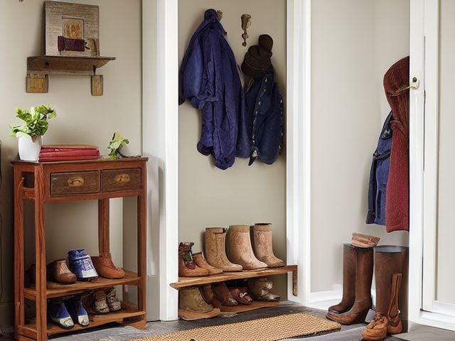

Mudroom micro zone
The Shoe and Boot Storage
Holds the footwear actually being worn this season, and gives wet pairs somewhere to drain without soaking the floor.
One session: 30-45 min. most of it in Sort, pairing up and walking out-of-season pairs upstairs

What done looks like
Two pairs per person on the rack, soles down and toes out, one lipped tray by the door holding whatever came in wet, and clear floor between the tray and the doorway.
Check these before you start
- FallWet soles carried past the tray leave an invisible film on hard floor right where everyone turns towards the kitchen.
- Water and electricityA boot dryer or heated mat with its flex lying across the same floor the wet boots drip onto.
- Fall, cut, or crushStudded cleats stored soles up on a low shelf catch bare hands and feet at exactly the wrong height.
What to have on hand before you start
These are types of thing, not brands. If you already own something that does the job, that is the right one to use. Each says which pass needs it and what to watch out for.
- Scraper and absorbent entry mat set
Stop grit and water at the threshold in two stages, one mat outside to scrape and one inside to soak, in the Shine, Safety and Sustain passes.
Lay flat with no curled edge, which is a trip hazard at a doorway; shake the outside mat and dry the inside one on the same day. - Stiff scrubbing brush
Scrub caked mud and salt out of a boot tray, a bin, or an outdoor surface, in the Shine pass.
Work outdoors where the run-off goes to ground rather than into a household drain. - Color-coded microfiber cloth set ×12
Wipe, dust, and dry surfaces, in the Shine pass.
Wash by use color; avoid fabric softener. - Neutral pH multi-surface cleaner
Routine cleaning of sealed surfaces, in the Shine and Sustain passes.
Verify surface compatibility; lock around children and pets. - Compact vacuum with attachments
Remove dust, crumbs, and debris, in the Shine pass.
Use appropriate attachment. - Keep, Relocate, Donate, Recycle, Trash container set ×5
Support rapid item routing during Sort, in the Sort pass.
Do not block exits. - Portable cleaning caddy
Transport and contain cleaning inputs, in the Straighten, Shine and Sustain passes.
Secure chemicals from children and pets. - Portable label maker
Create durable standardized labels, in the Standardize and Sustain passes.
Follow surface and adhesive guidance. - Removable write-on labels
Create temporary or adjustable visual controls, in the Standardize pass.
Test on delicate finishes.
Only if your shoe and boot storage has one: 8 more
Not every shoe and boot storage needs these. Each one is here because some do, and the reason is next to it.
- Deck Box
Protect outdoor cushions and patio items, in the Straighten, Standardize and Sustain passes.
Do not overload; anchor wall-mounted or tall systems where required. - Broom and Tool Wall Clips
Secure cleaning tools vertically, in the Straighten, Standardize and Sustain passes.
Do not overload; anchor wall-mounted or tall systems where required. - Board Game Component Bags
Keep game pieces complete, in the Straighten, Standardize and Sustain passes.
Do not overload; anchor wall-mounted or tall systems where required. - Controller Dock
Charge and contain game controllers, in the Straighten, Standardize and Sustain passes.
Do not overload; anchor wall-mounted or tall systems where required. - Toy Bin with Picture Label ×4
Support independent child cleanup, in the Straighten, Standardize and Sustain passes.
Do not overload; anchor wall-mounted or tall systems where required. - Front-Facing Book Bin ×2
Display children's books for easy access, in the Straighten, Standardize and Sustain passes.
Do not overload; anchor wall-mounted or tall systems where required. - Anti-tip anchors and hardware
Secure tall furniture and shelving, in the Safety pass.
Install to manufacturer and wall-type requirements. - Water-resistant permanent labels
Mark stable standards and long-term storage, in the Standardize and Sustain passes.
Avoid irreplaceable surfaces.
The six passes, in order
Work them in this order. Sorting after you have arranged things means arranging things you were about to remove.
Sort
Decide what stays. Everything else leaves the zone now.
Bring every pair in the house down to this floor and match them up. Outgrown pairs, split soles and unmatched singles leave today, and anything for the opposite season goes up to its owner's wardrobe rather than back on the rack.
Straighten
Give what stays a home, placed where the hand actually reaches.
One row per person, heaviest boots on the bottom row so nobody lifts them, lightest slippers on top. Cleats and caked walking boots live on the tray only, never on a shelf where the dried mud drops onto the pair below.
Shine
Clean it, and use the cleaning to inspect what you cannot see when it is full.
Tip the tray out into the garden and wash it, because dried mud on a boot tray turns to dust and gets walked straight back inside. Wipe the rack rails and vacuum the floor of the rack where the grit lands.
Surface by surface, all 5 of them, with what to use on each.
Safety
Make the zone safe for everybody who uses it, including the shortest person.
A wet boot sole on a hard floor is the surest slip in this house, so the tray sits exactly where boots actually come off, not two steps further in. Keep the line from the door to the bench completely empty, because a shoe left out in a dark hallway is what people fall over at night.
Standardize
Write down the best way you know today, so it survives you forgetting.
Two pairs per person at the door, wet on the tray, dry on the rack. Mark the tray's footprint on the floor with tape so it goes back to the same spot after every clean.
Sustain
Attach the reset to something that already happens, so it keeps itself.
When you take your boots off, they go soles down on the tray, and when they are dry they move up to the shelf that evening.
The boots waiting for a winter that has not come
Everyone has a pair kept for conditions that never quite arrive: the proper wellies, the hiking boots worn twice, the smart shoes for the event you keep not going to. They are expensive and undamaged, which is why you will not decide. So separate the two questions. Keeping the pair is one decision; giving it a slot at the door is another. The rule for the door is simple: a pair earns a slot only if it has been on someone's feet in the last four weeks. Everything else goes to the wardrobe with today's date on a slip of paper tucked in the toe. When the season it was bought for has come and gone with that slip still in place, you have your answer, and it is not a hard one any more.
Cleaning it properly, surface by surface
Tip the boot tray out into the garden and wash it, because dried mud turns to dust and gets walked straight back in. Then wipe the rack rails and vacuum the grit that lands on the rack floor.
Work down, not across. Whatever comes off a high surface lands on the one below it, so cleaning the floor first means cleaning it twice.
Carry these in with you. Portable cleaning caddy; Compact vacuum with attachments; Color-coded microfiber cloth set; Neutral pH multi-surface cleaner; Floor-material-compatible cleaner; Garden hose or outdoor tap (not in this zone's list); Stiff scrubbing brush (not in this zone's list).
- The top of the rack and any upper shelf
Start at the top with a dry cloth to catch settled dust, then wipe the top surface with a cloth damp with neutral pH multi-surface cleaner. Work back to front so grit falls onto the lower shelves you have yet to reach. - The rack rails and shelves
Take the shoes off shelf by shelf. Wipe each rail and shelf with the damp cloth, getting the dried mud that cakes along the underside of a wire rail where you never look. Dry each rail before the shoes go back soles down and toes out. - The shoes and boots themselves
Knock caked mud off outdoors, brush the welts and treads clear, and wipe leather uppers with a barely damp cloth. Stand anything still wet on the tray to drain rather than back on the rack. - The lipped boot tray
Carry the tray outside, tip the salt and grit into the garden, and hose or scrub it with a stiff brush until the lip and corners run clean. Dry it off before it goes back exactly where boots come off, since a wet tray just moves the puddle. - The floor of the rack and the run to the door
Vacuum the rack floor with the crevice tool where grit and gravel collect, then wipe or mop the sealed floor from the tray to the doorway with the floor-material-compatible cleaner. Keep that stretch clear once it is dry.
Inspect as you clean. Cleaning is the only time you see the zone empty, so use it.
- If a boot dryer or heated mat lives here, flag any flex that is cracked, taped, or lying across the wet strip of floor where boots drip.
- As you clear each shelf, flag a rack shelf or rail that flexes, sags, or has a spot weld starting to give under the weight of loaded boots.
- Note black speckling or a sour smell inside a boot that has been left damp, and flag it as gear that never dried through.
- Watch for rust or a rough burr on a metal rack edge or on studded cleats stored soles up, and flag it before a hand meets it.
The standard that keeps it fixed
Two pairs per person at the door, wet stays on the tray, and the path from the door stays bare.
Reset trigger. When you step in and take your boots off.
The rest of the mudroom, in working order
Each of these is one session on its own. Finish this zone before you open the next.
- The Family Hook Zone
- The Bench and Transition Surface
- The Shoe and Boot Storage, you are here
- The Pet Station
- The Seasonal Outdoor Gear
- The Cleaning and Utility Zone
The Mudroom in full, with what each of the 6 zones is for
Related reading
- What is 6S?
- This zone's safety pass, in full
- Is one spot in this zone always the one you skip?
- Why this zone gets messy again
- Decluttering vs. organizing
- Before you buy storage for this zone
- Still does not fit, even after the honest count?
- Does something in this zone actually get used somewhere else?
- Stuck on one item in this zone?
- Written the standard, but nobody else follows it?
- Does everyone in the house agree what "done" looks like here?
- Does more than one person use this zone?
- Found a duplicate of something in this zone?
- Why the standard above names one home per category
- Is the everyday item in this zone actually the easy one to reach?
- Not sure whether to keep something in this zone?
- Does this zone keep running out of something?
- Started this zone and stalled partway through?
- Have you stopped noticing the clutter in this zone?
When you want it off the screen
Carry The Shoe and Boot Storage into the room
The method above is complete and free. The Whole House Print Pack puts The Shoe and Boot Storage and the other 113 micro zones on 684 printable cards, so the steps you just read are not stuck behind a phone screen while your hands are full.
The Print Pack, 19 dollarsJust this zone, 4 dollarsOr draw a card free
The Shoe and Boot Storage on its own is 4 dollars for 6 cards. All 114 micro zones is 19 dollars for 684. The whole house is the better buy; the single zone is here so you can take only what you are working on.
If The Shoe and Boot Storage keeps fighting back, the real problem usually sits somewhere else in the room. A one hour virtual consult is 250 dollars: we find the function, the friction and the root cause together, and you keep a written standard for the space. See what a consult covers.